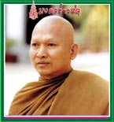

คอลัมน์ มงคลข่าวสด
นสพ.ข่าวสด ฉบับวันที่ ๒๗ เมษายน พ.ศ.๒๕๔๖ ปีที่ ๑๓ ฉบับที่
๔๕๓๑ หน้า ๑
 ชั่วโมงนี้
ผู้คนหวาดผวา "ซาร์ส" ไข้หวัดมรณะ เพราะร้ายแรงยิ่งกว่า "เอดส์"
ผู้ป่วยมีสิทธิตายเพียงระยะเวลาไม่ถึงเดือน
แต่ย้อนไปเมื่อหลายปีก่อน
เอดส์เป็นโรคที่ผู้คนหวาดกลัวมากที่สุด ผู้ติดเชื้อถูกเว้นวรรคจากชุมชน
สังคมรอบข้าง
แม้แต่สายโลหิตเดียวกันยังปฏิเสธ
ผู้ป่วยต้องเก็บตัวเงียบอยู่โดดเดี่ยว
ไร้พี่ ไร้น้อง ไร้เพื่อน หมดสิ้นทุกสิ่งทุกอย่าง เหมือนตายทั้งเป็น
จนเอดส์คู่แรกเมืองไทย
น้องฝ้ายกับสามีได้โชว์ตัวครั้งแรก ทำให้สังคมเริ่มให้กำลังใจผู้ป่วยเอดส์มากขึ้น
ผู้ติดเชื้อก็มีขวัญและกำลังใจเพิ่มขึ้น
จนเกิดการยอมรับจากองค์กรช่วยเหลือทั้งภาครัฐและเอกชน
ยิ่งโครงการ
"ธรรมรักษ์นิเวศน์" บ้านพักผู้ป่วยโรคเอดส์ระยะสุดท้าย วัดพระบาทน้ำพุ
ต.เขาสามยอด อ.เมือง ลพบุรี เป็นที่รู้จักของคนทั่วไป ซึ่งแวะเวียนไปเยี่ยมโครงการวันละหลายร้อยคน
ต่างคนต่างฐานะ ต่างความคิด แต่จุดหมายเดียวกัน
โครงการนี้ถูกก่อตั้งขึ้นเมื่อปีพ.ศ.
๒๕๓๕ ภายใต้การดูแลของ"พระครูอาทรประชานาถ" หรือพระอาจารย์อลงกต
ติกขปัญโญ เพื่อสร้างจิตสำนึกให้สังคมให้เมตตาและมีมนุษยธรรมต่อผู้ป่วยโรคเอดส์
ที่ถูกทอดทิ้งจนตาย
มีพระสงฆ์
แพทย์ พยาบาล อาสาสมัครเป็นผู้ดูแลร่วมกัน ทั้งด้านร่างกายและจิตใจ
ให้บริการสาธารณกุศล สงเคราะห์ทั้งที่พัก อาหาร เครื่องนุ่งห่ม
และยารักษาโรค โดยไม่มีการเรียกเก็บค่าใช้จ่าย
มีค่าใช้จ่ายเดือนละไม่ต่ำกว่า
๑.๕ ล้านบาท บางเดือนเงินไม่มีหรือมีก็ไม่เพียงพอ จึงตกอยู่ที่พระอลงกตเพียงรูปเดียว
แต่ทุกสิ่งก็จบลงที่ความตั้งใจเด็ดเดี่ยวและเสียสละ
ออกตระเวนบอกบุญ
ทัวร์คอนเสิร์ต ต่อสู้ฟันฝ่าและทำทุกวิถีทาง เพื่อช่วยเหลือผู้ป่วยให้มีชีวิตอยู่ต่อไปจนวาระสุดท้ายแห่งชีวิต
ทั้งหนักและท้าทายพ่อพระผู้ป่วยเอดส์
พระอลงกต
ถือกำเนิดในตระกูลพลธ์มุกข์ ของพ่อเสริม แม่วิลาวัลย์ เมื่อวันที่
๙ ธ.ค. ๒๔๙๖ ณ อำเภอโพธาราม จ.ราชบุรี
โยมพ่อเป็นข้าราชการกรมทางหลวง
ซึ่งต้องโยกย้ายไปทำงานตามจังหวัดต่าง ๆ ส่วนโยมแม่ก็เจ็บป่วยและลาโลกไปตั้งแต่ท่านอายุเพียง
๓ ขวบ ชีวิตท่านจึงอยู่ในความดูแลของคุณย่าซึ่งเป็นคนดุและเจ้าระเบียบ
อีกทั้งถูกโยมพ่อปลูกฝังการจัดระเบียบชีวิตทั้งตื่นเช้า
เขียนหนังสือ คัดลายมือ กระตือรือร้นทำงาน ดูแลต้นไม้ร่วมกับพี่น้องอีก
๕ คน พออายุ ๕ ขวบก็อ่านหนังสือออกเขียนได้โดยที่ยังไม่ได้ไปโรงเรียน
ระหว่างนั้นโยมพ่อพาไปฝากครูใหญ่โรงเรียนโพธารามคุณารักษ์วิทยาคาร
แต่ไม่ให้ขึ้นชั้นปรากฏว่า เด็กอายุ ๕ ขวบสอบได้ที่ ๑ จนตกกระไดพลอยโจนขึ้นป.๒
และสอบได้ที่ ๑ ตลอดมา
ครั้นเข้าสู่วัยหนุ่ม
ปีพ..ศ. ๒๕๑๙ สำเร็จปริญญาตรีสาขาวิศวกรรมศาสตร์ เกียรตินิยมอันดับ
๒ มหาวิทยาลัยเกษตรศาสตร์ ได้รับทุนไปศึกษาต่อปริญญาโท สาขาวิศวกรรมเครื่องกล
ที่มหาวิทยาลัยแห่งชาติออสเตรเลีย
เมื่อบินกลับมาเมืองไทยได้ใช้ชีวิตเสเพลพักหนึ่ง
ต่อมาได้คติเตือนใจจากคนจีนที่เคารพนับถือเสมือนเครือญาติ แนะนำให้ต่อสู้ชีวิตและให้บวชเอาเคล็ดขณะอายุ
๒๖ ปี ซึ่งชีวิตการงานกำลังรุ่งโรจน์
จึงตัดสินใจเข้าบวชที่วัดบวรนิเวศวิหาร
ยิ่งบวชยิ่งศึกษาธรรมะก็ยิ่งมีอะไรอยากรู้มากขึ้น
รู้จักชีวิต รู้จักโลกมากยิ่งขึ้น จนเข้าใจสัจธรรมที่ว่า
"เราไม่สามารถจะครอบครองอะไรเป็นของตัวเองได้
ตายแล้วก็ไม่มีใครเอาอะไรไปได้ แม้แต่ตัวตนของเราก็ไม่ใช่ของของเรา
คนเราต้องพลัดพรากจากของรักของชอบใจทั้งสิ้น ดั่งพระพุทธองค์ตรัสไว้"
จึงมุ่งหน้าฝึกฝนสมาธิ
ออกธุดงค์อยู่หลายปีตามพื้นที่จังหวัดปราจีนบุรี นครนายก เพชรบูรณ์
ฯลฯ แล้วมาฝึกสมาธิที่ถ้ำเขาเขียวในเขตวัดพระบาทน้ำพุอยู่รูปเดียว
๖-๗ ปี
ปี
พ.ศ. ๒๕๓๓ พระผู้ใหญ่ได้ขอให้ลงมาดูแลวัดพระบาทน้ำพุ สอนสมาธิวันเสาร์-อาทิตย์
และแต่งตั้งเป็นรักษาการเจ้าอาวาส
ราวปีพ.ศ.
๒๕๓๔ รู้มหันตภัยโรคเอดส์ที่แพร่ระบาด และได้เห็นโครงการบ้านพักผู้ป่วยระยะสุดท้ายที่เขียนขึ้นโดย
นายเจฟฟรีย์ เอ.เซเกอร์ นักจิตวิทยาบำบัด ซึ่งเป็นหนึ่งในกลุ่มทำงานขององค์กรพุทธศาสนิกสัมพันธ์เพื่อสังคม
ที่มุ่งหวังจะมีวัดและพระทำโครงการนี้
ปีรุ่งขึ้นท่านจึงเริ่มดำเนินการโครงการธรรมรักษ์นิเวศน์
บ้านพักผู้ป่วยเอดส์ระยะสุดท้าย โดยสมเด็จพระศรีนครินทราบรมราชชนนี
ทรงมีพระเมตตาพระราชทานทรัพย์ส่วนพระองค์เป็นจำนวน ๓๐๐,๐๐๐ บาทเป็นประเดิม
โดยมีพระราชประสงค์ให้เป็นมูลนิธิพัฒนางานชุมชนบำบัดต้นแบบ
บนพื้นฐานของความมีเมตตา
และมีมนุษยธรรม ตามวิถีทางของชาวพุทธ
นอกจากนี้แล้ว
สมเด็จพระญาณสังวร สมเด็จพระสังฆราช สกลมหาสังฆปริณายก ยังประทานยาและเวชภัณฑ์ต่าง
ๆ เพื่อให้การสงเคราะห์แก่ผู้ป่วยเป็นประจำทุกเดือน และทรงเห็นชอบในการจัดตั้งชุมชนบำบัดผู้ป่วยโรคเอดส์
ทรงรับโครงการนี้ไว้ในพระสังฆราชูปถัมภ์
ช่วงปีแรก
พระอลงกตถูกต่อต้านจากชาวบ้าน มีการร้องเรียนไปถึงนายอำเภอ ผู้ว่าฯ
ให้ย้ายโครงการไปที่อื่น
รุนแรงถึงขั้นไม่ยอมให้ผู้ป่วยขึ้นรถเมล์
ทานก๋วยเตี๋ยวในร้าน
ท่านถูกประท้วงไม่ใส่บาตร
ต้องจ้างเด็กในวัดขับมอเตอร์ไซค์ไปซื้ออาหารมาทำเองเพื่อเลี้ยงผู้ป่วย
เมื่ออยู่รูปเดียวก็ทำทุกอย่างตั้งแต่ให้อาหาร
ป้อนข้าว ป้อนน้ำ ซักเสื้อผ้า ทำแผล ทายา บีบนวด เช็ดเนื้อเช็ดตัว
ยามนั้นไม่มีบ้านพัก
อาศัยหอสวดมนต์เป็นห้องพักชั่วคราว อีกทั้งถูกกระแสกดดันจากสังคม
แต่ก็ไม่ทำให้ท่านสิ้นพลังใจ
ท่านพยายามชี้แจงกับชาวบ้านให้เข้าใจการอยู่ร่วมกัน
และการดูแลผู้ป่วยอย่างมีคุณธรรม จนเกิดอาสาสมัครเข้ามาช่วยงาน
เกิดการเปลี่ยนแปลงด้านทัศนคติที่ดีขึ้น
จากที่เคยรังเกียจและกลัว ก็เปลี่ยนมาเป็นเข้าใจ เห็นอกเห็นใจผู้ป่วยมากขึ้น
วัดพระบาทน้ำพุไม่เคยว่างเว้นจากงานศพซึ่งมีให้เห็นวันละไม่น้อยกว่า
๒ ศพ มีพิธีสวดศพทุกวัน ทั้งคนหามและพระสวดต่างเป็นเอดส์ทั้งหมด
เมื่อมีผู้ป่วยเอดส์เพิ่มขึ้น
ท่านจึงเปลี่ยนเตาเผาถ่านธรรมดาเป็นเตาเผาไร้มลพิษรุ่นใหม่จากอเมริกา
มูลค่า ๔ ล้าน ๖ แสนบาท สามารถเผาได้วันละ ๑๐ ศพ
ปัจจุบันภาระของท่านเพิ่มทวีคูณ
เนื่องจากเด็กทารกชาย-หญิงของผู้ป่วยเอดส์ ซึ่งไร้ผู้เหลียวแล
จึงได้ผุดโครงการเลี้ยงเด็กผู้ป่วยเอดส์ขึ้นอีกโครงการหนึ่ง
แม้หนักจนยากแบกรับ
แต่จำต้องทำ
ในห้วงภาวะเศรษฐกิจตกต่ำ
จำนวนผู้ป่วยยิ่งเพิ่มมากขึ้น เฉพาะที่อยู่ในความดูแลไม่ต่ำกว่า
๓ พันคน
โครงการของท่านเป็นการให้เปล่า
จนเงินบริจาคมีไม่เพียงพอ จึงต้องขอรับบริจาคข้าวสาร อาหารแห้ง
ยารักษาโรค และสิ่งของต่าง ๆ เพื่อประทังชีวิตผู้ป่วย
ขณะนี้ภายใต้โครงการได้มีบ้านพักหลังเล็ก
ๆ ประมาณ ๑๐๐ หลัง และกำลังจัดสร้างเพิ่มขึ้นอีก ๑๐๐ หลัง ให้ผู้ป่วยเอดส์ที่อาการไม่สาหัสได้อยู่อย่างอิสระ
เหมือนกับอยู่บ้านตัวเองโดยไม่ต้องมีใครรบกวน เมื่อถึงเวลาก็จะมีการปฏิบัติสมาธิให้จิตใจสงบ
ทำบุญใส่บาตร
ส่วนผู้ป่วยเอดส์ระยะสุดท้ายจะอยู่ที่บ้านวลัยลักษณ์
มีลักษณะคล้ายโรงพยาบาลขนาดเล็ก สามารถรับผู้ป่วยได้ ๒๐ เตียง
มีพยาบาลและอาสาสมัครคอยให้ความช่วยเหลือตลอด ๒๔ ชั่วโมง
ผู้สนใจสมทบกองทุนเพื่อมูลนิธิธรรมรักษ์นิเวศน์
ได้ที่ ธนาคารกรุงเทพฯพาณิชย์การ สาขาลพบุรี บัญชีออมทรัพย์เลขที่
๑๒๑-๒-๑๘๕๔๒-๖, ธนาคารทหารไทย สาขาลพบุรี บัญชีออมทรัพย์ชื่อมูลนิธิธรรมรักษ์
เลขที่ ๓๐๔-๒-๓๗๖๑๗-๒ หรือ ธนาณัติไปที่โครงการธรรมรักษ์นิเวศน์
ตู้ปณ. ๘๓ ปทจ. ลพบุรี ๑๕๐๐ โทร.๐-๑๘๓๑-๓๔๔๑ โทรสาร ๐๓๖-๔๒๒-๖๐๐
และไม่ได้งอมือตั้งรับเพียงอย่างเดียว
ปัจจุบันท่านร่วมกับหน่วยงานทั้งภาครัฐ-เอกชน
รณรงค์ให้ความรู้กับสังคม เพื่อให้ตระหนักและวิตกถึงปัญหาและภัยที่เกิดจากโรคเอดส์ซึ่งรุนแรงขึ้นทุกปี
ภายใต้"โครงการหัวใจสีขาว"
เน้นที่กลุ่มวัยรุ่นและกลุ่มเสี่ยงอายุระหว่าง
๑๕-๒๒ ปี
ด้วยความเป็นพระของชุมชน
ปี พ.ศ. ๒๕๓๙ จึงได้รับพระราชทานสมณศักดิ์ที่ "พระครูอาทรประชานาถ"
อันหมายถึง "ที่พึ่งของปวงชน"
นอกจากนี้ยังได้รับปริญญาเอกกิตติมศักดิ์
สาขาสังคมสงเคราะห์ศาสตร์ มหาวิทยาลัยธรรมศาสตร์ สาขาพยาบาลศาสตร์
มหาวิทยาลัยสงขลานครินทร์ สาขาปรัชญา มหาวิทยาลัยรามคำแหง และสาขาสังคมวิทยาและมานุษยวิทยา
มหาวิทยาลัยมหามกุฏราชวิทยาลัย
อีกทั้งได้รับรางวัลเกียรติยศอีก
๖ รางวัลซ้อน เป็นขวัญและกำลังใจ ประกอบด้วย
รางวัลมหิดลวรานุสรณ์
พระบาทสมเด็จพระเจ้าอยู่หัว พระราชทาน
รางวัลเสมาธรรมจักร
สมเด็จพระเทพรัตนราชสุดาฯ สยามบรมราชกุมารี พระราชทาน
รางวัลแสงเทียนส่องใจ
พระเจ้าวรวงศ์เธอพระองค์เจ้าโสมสวลี พระวรราชาทินัดดามาตุ พระราชทาน
รางวัลคนดีศรีสังคม
จากสโมสรโรตารี่
รางวัลพลเมืองดีเด่น
จากสโมสรไลอ้อน
รางวัลบริการสังคม
เพื่อคุณธรรม จากสำนักข่าวกรุงเทพฯ
วันนี้พระอลงกต
คือแสงเทียนเล่มเล็กส่องประกาย เป็นความหวังสุดท้ายของผู้ป่วยเอดส์
ที่เลือกใช้ธรรมะจากพุทธศาสน์มาบำบัดอาการผู้ป่วยเอดส์ ทั้งสร้างกำลังใจ
ยืดเวลาพวกเขาให้อยู่ดูโลกได้นานขึ้น
ได้เปลี่ยนทัศนคติญาติและสังคมให้หันมาเยียวยาใจผู้ป่วย
เป็นงานหนักที่เกิดขึ้นไม่ได้
ถ้าไม่เอื้ออาทรและทุ่มเทจริง ๆ ..
|